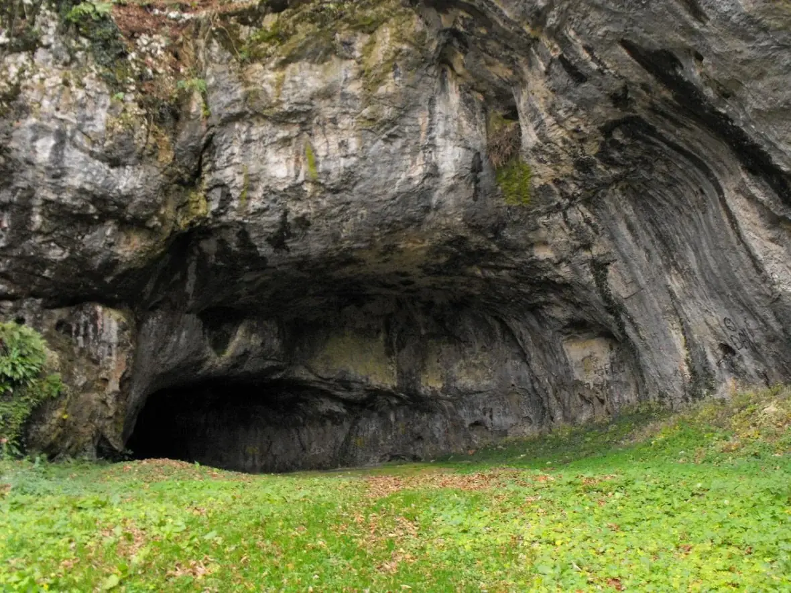
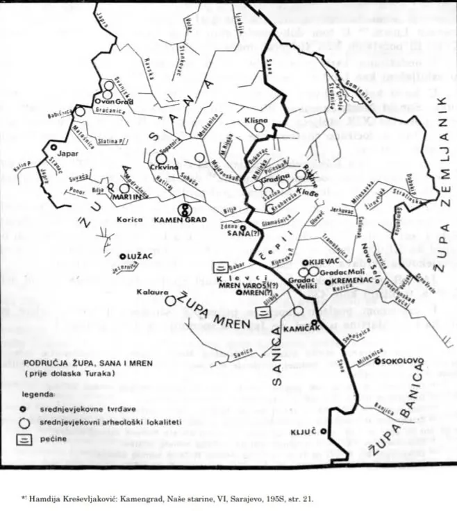
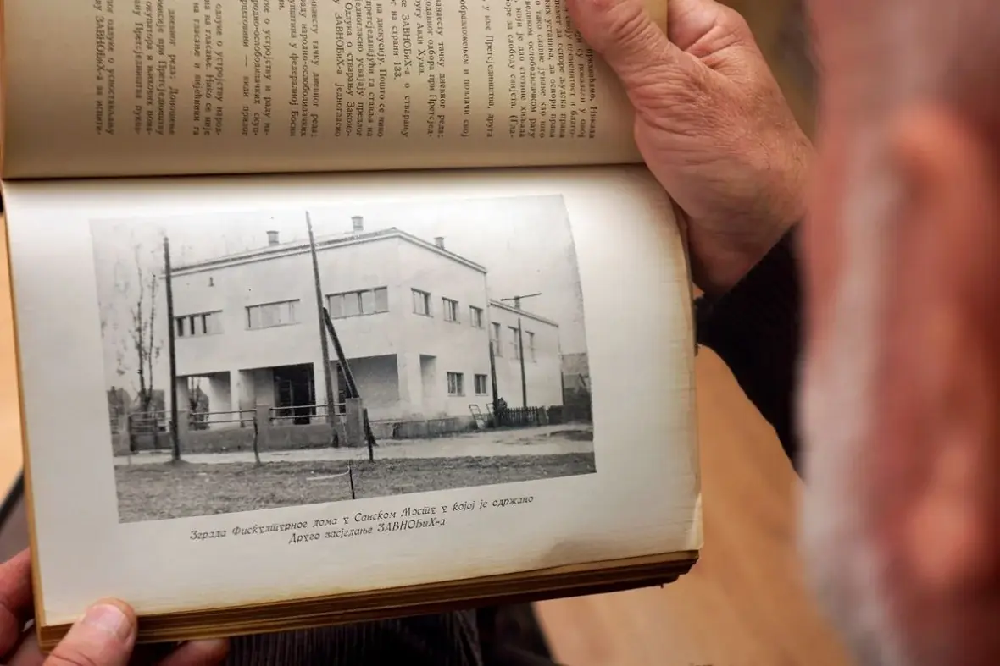
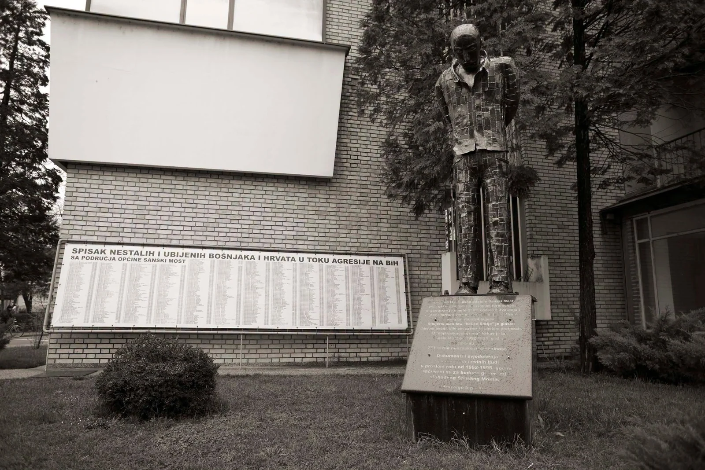
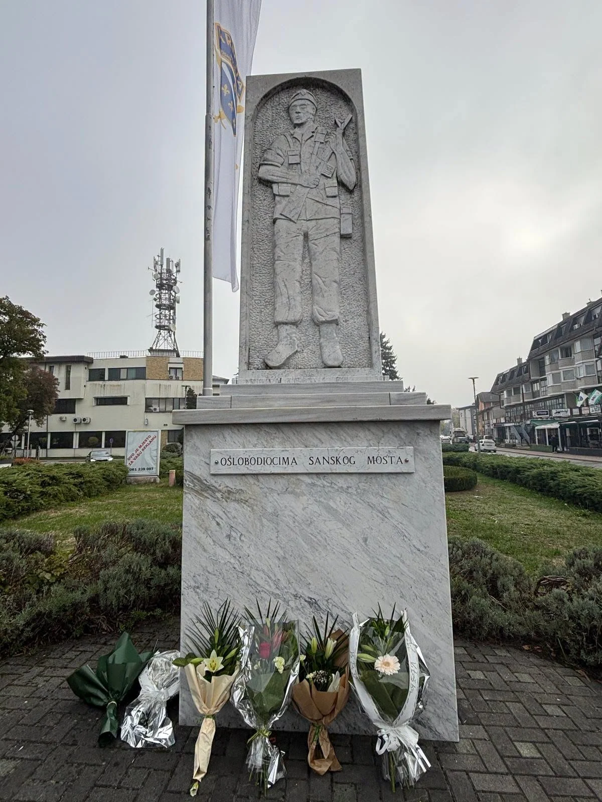
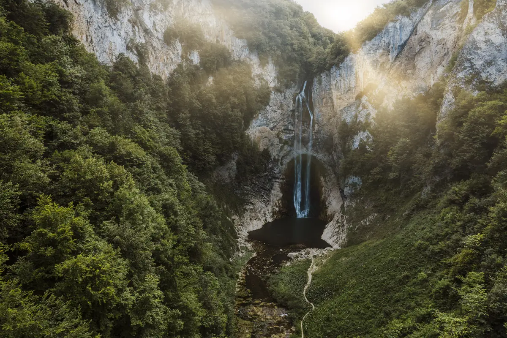

Mjesta
Around
Sanski Most
Historija
Kako je grad dobio ime
The name comes from the river Sana, from the Latin sana (“healthy”), as in Aqua Sana. In 1717, in the Ottoman period, the fortress town is mentioned as Džisr-i Sana (džisr = bridge).
Kroz stoljeća
- oko 2600. p. n. e.
U Hrustovačkoj pećini žive ljudi vučedolske kulture. Nalazi su toliko osobeni da arheolozi govore o posebnom, hrustovačkom tipu te kulture.

Hrustovačka pećina danas - od 6. do 3. st. p. n. e.
Željeznodobno naselje s nekropolom od 176 grobova.
- Antika
Ovim krajem žive Mezeji, ilirski narod. Rimljani ih pokoravaju i između Sane i Japre uređuju rudarski distrikt.
- 1244
Povelja kralja Bele IV najstariji je poznati dokument koji imenuje Sanu, uz župe Dubicu, Mren i Vrbašku.

Župe Sana i Mren prije dolaska Osmanlija - 1374
Prvi spomen Kamengrada, tada posjeda knezova Babonića Blagajskih; područje pripada župi Sana.

Kamengrad danas - 1498-99
Osmanlije zauzimaju područje. Predanje kaže da je sultan Mehmed Fatih ispod Kamengrada klanjao na otvorenom; na tom mjestu nastala je musala.

„Musalla“ sultana Fatih Mehmeda II., Donji Kamengrad - 16. st.
Gradi se Hamzibegova džamija (prije 1557).

Hamzibegova džamija s jednom munarom, 1946. - 1878
Austrougarska vojska ulazi u Sanski Most 8. septembra, bez borbe. Grad postaje sjedište kotara i počinje rasti na desnoj obali Sane.

Gradski trg i kuća Unkića, početak XX stoljeća - 1922
Osnovan je NK Sana. Prvu nogometnu loptu u grad je 1913. donio Branko Juzbašić, student u Pragu.

Jedna od prvih sanskih nogometnih ekipa (kolorirano) - 1939
Građani i općina grade Sokolski dom, a preko Sane već stoji novi, betonski gradski most.

Pogled s novog betonskog mosta prema Mahali i Hamzibegovoj džamiji, novembar 1939. - 1944
Ovdje se održava Drugo zasjedanje ZAVNOBiH-a, na kojem je donesena Deklaracija o pravima građana Bosne i Hercegovine.

Zgrada Sokolskog doma u knjizi - 1971
Prema popisu, općina ima 62.102 stanovnika i deseta je po broju stanovnika od stotinu općina u Bosni i Hercegovini.

Trg Maršala Tita, početak 1970-ih - 1992
Nakon što Vojska Republike Srpske preuzme kontrolu nad općinom, nesrpski civili su ubijani i zatvarani u logore; ubijeni stanovnici kasnije su pronalaženi u oko 30 masovnih grobnica. Na mostu u Vrhpolju 31. maja ubijeni su civili iz sela Begići; u junu je srušena Hamzibegova džamija.

Spomenik uz spisak nestalih i ubijenih Bošnjaka i Hrvata s područja općine Sanski Most - 1995
Armija RBiH ulazi u grad u operaciji Sana 95, 9. i 10. oktobra. Taj dan, 10. oktobar, Sanski Most obilježava kao Dan oslobođenja i Dan općine.

Spomenik s posvetom „Oslobodiocima Sanskog Mosta“ - 2000
Hamzibegova džamija ponovo je otvorena nakon obnove.

Hamzibegova džamija danas - 2014
Sana ponovo plavi grad; kroz ulice se prolazi čamcem.

Čamcem kroz grad, 2014. - 2024
U septembru se na Muležu otvara via ferrata, na stijeni visokoj 90 m.

Mulež
Sanski Most
U brojkama
-

56 m
Visina vodopada Blihe.
-
9
Rijeka se sastaje u gradu i oko njega.
-
142 km
Dužina rijeke Sane, koja se kod Novog Grada ulijeva u Unu.
-
1374
Godina u kojoj se tvrđava Kamengrad prvi put spominje.
-
4
Munare Hamzibegove džamije, koja je, prema navodima, jedina džamija u Bosni i Hercegovini s četiri munare.
-
176
Graves in an Iron Age necropolis from the 6th to 3rd century BC.
Devet rijeka
The town on
nine rivers
The Sana is about 142 km long and flows into the Una at Novi Grad.
Sana izvire kod Mrkonjić Grada.
- Sana
- Sanica
- Dabar
- Zdena
- Bliha
- Majdanska rijeka
- Japra
- Sasinka
- Kozica